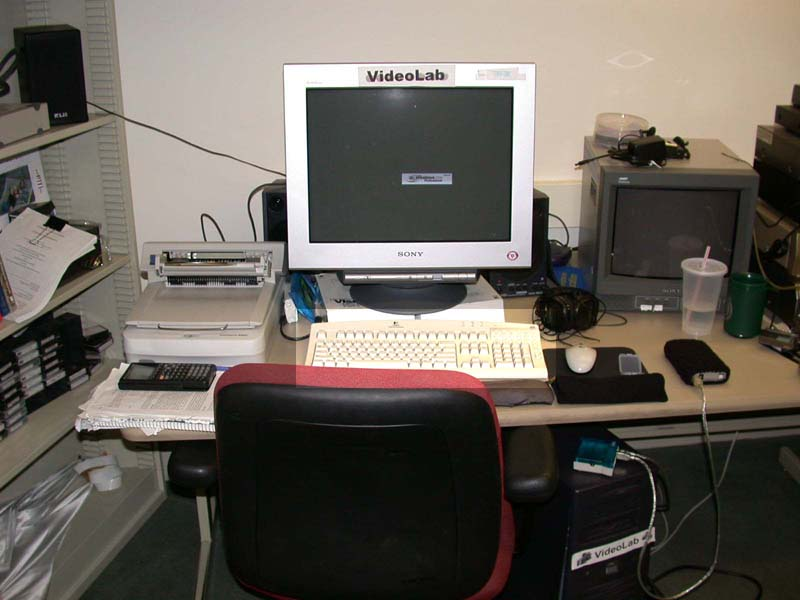
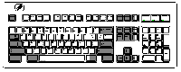

The Keyboard
The Keyboard 

The brighter region in this picture of my desk shows the keyboard of Videolab. A keyboard allows a person to tell the computer what to do. You have probably used a keyboard before to tell a computer what sentences you wanted in a paper or what words to send a friend in an email.
